Dva dny, kdy Kampus Hybernská ožil cirkulární ekonomikou: workshopy, přednáškami, výstavou i módní přehlídkou. Tady je shrnutí, jak to celé dopadlo.
Dva dny nabité programem: workshopy, přednáškami, výstavou i módní přehlídkou.
Kdy se vyplatí věci půjčovat místo kupovat, jak nakupovat s rozmyslem a jak vypadá cirkulární město. Příklady, které jste si odnesli rovnou domů.
Praktické dílny: výroba kimchi, opravy elektroniky, upcyklace nábytku i textilu. Odcházeli jste s novou dovedností.
Produkty a projekty firem, které dokazují, že cirkularita funguje a že má nejrůznější podoby.
Oblečení, co už nenosíte, dostalo druhý život. Komunitní swap a bazar ve spolupráci s Gratis Market.
Dílna na opravy a úpravy věcí byla otevřená celé odpoledne. Vedu Clothing měla navíc vlastní koutek s radami, jak ušít, přešít nebo upcyklovat.
Oblečení z recyklovaných a upcyklovaných materiálů od Kamily Vodochodské a Jany Horejšové. Udržitelnost, která vypadala dobře.
Dva dny, stovky momentek. Tady je jen pár z nich.
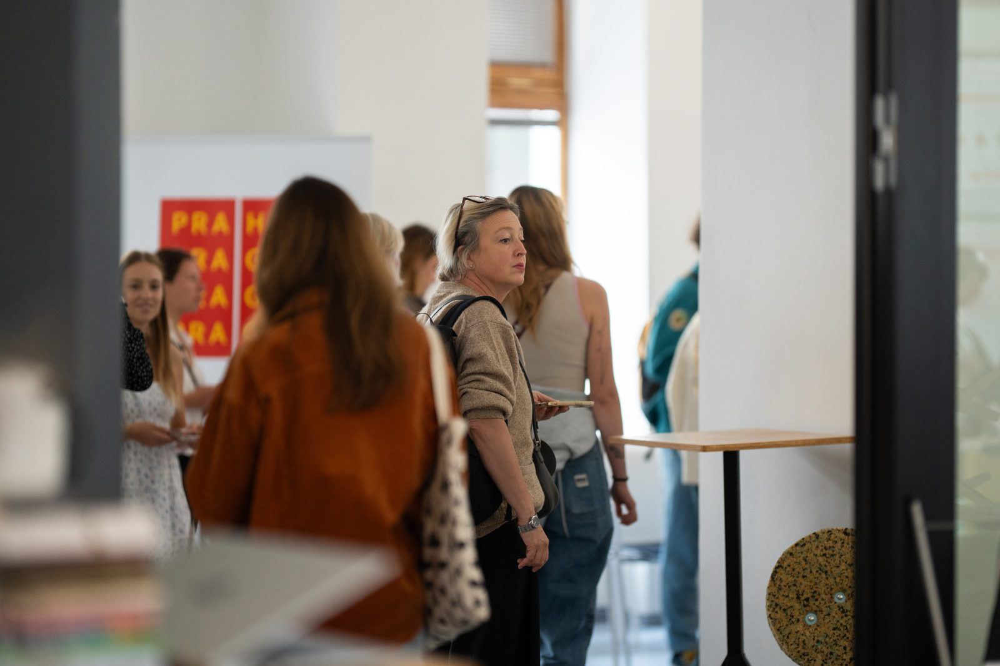
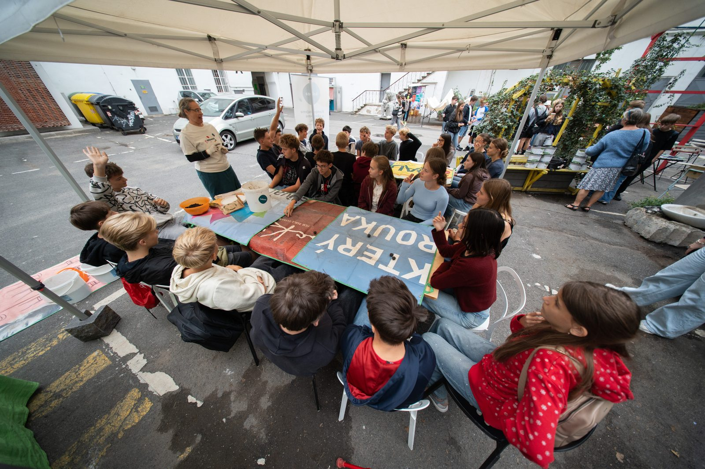
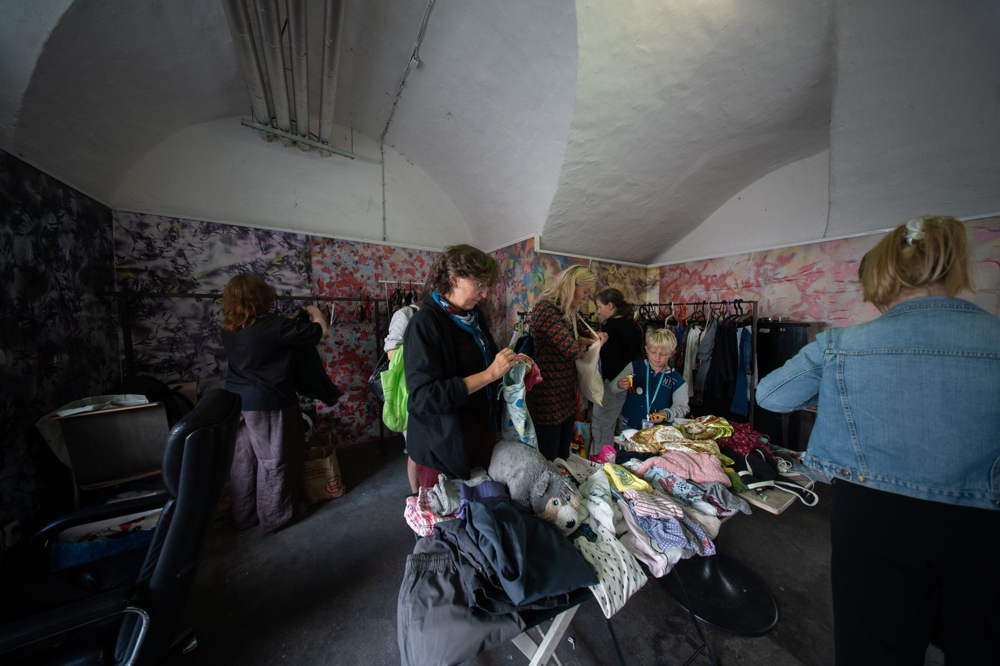
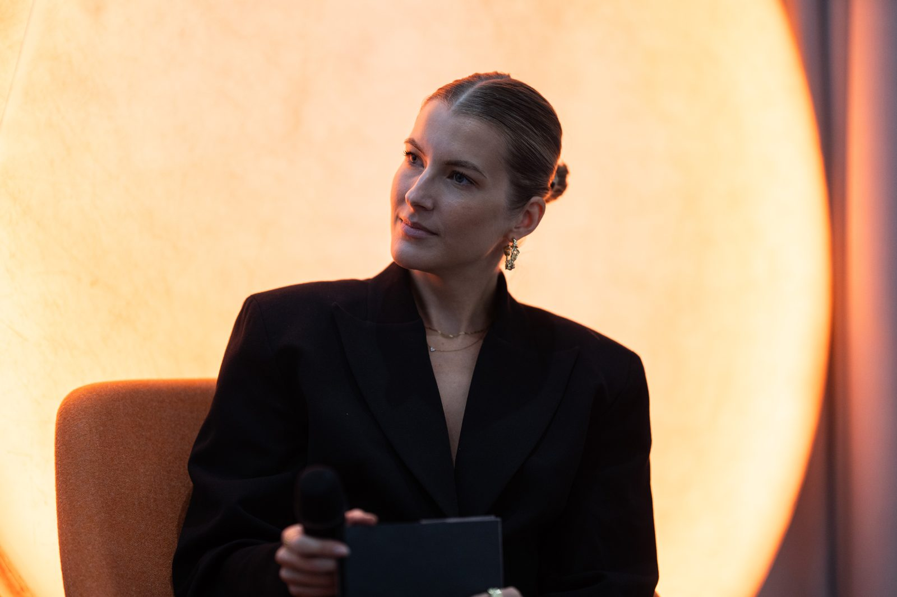
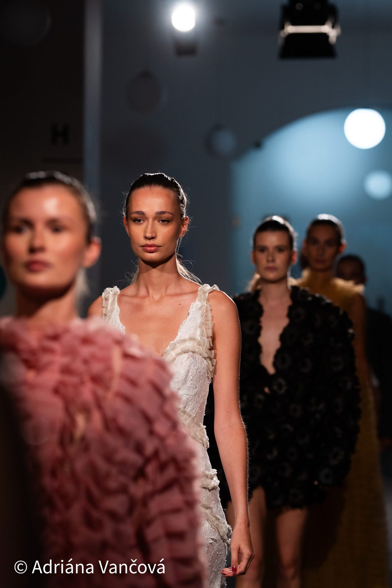
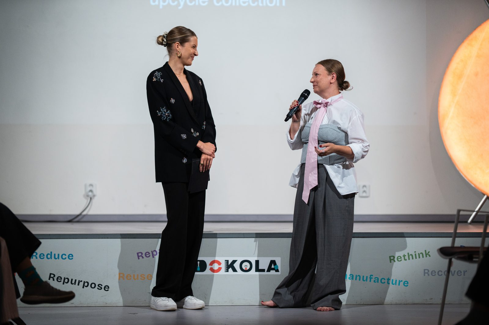
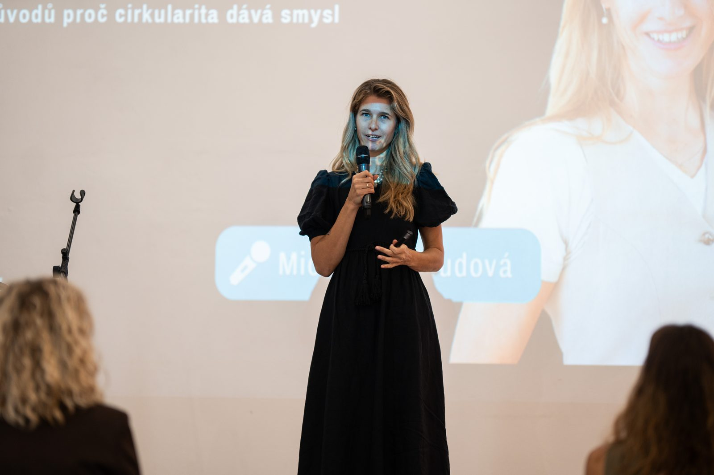
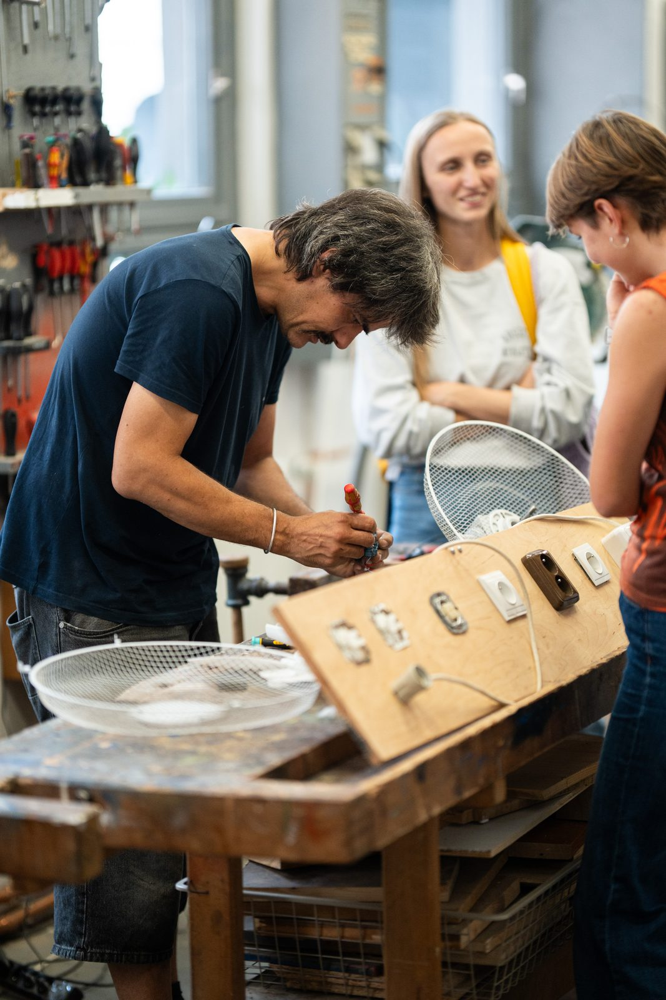
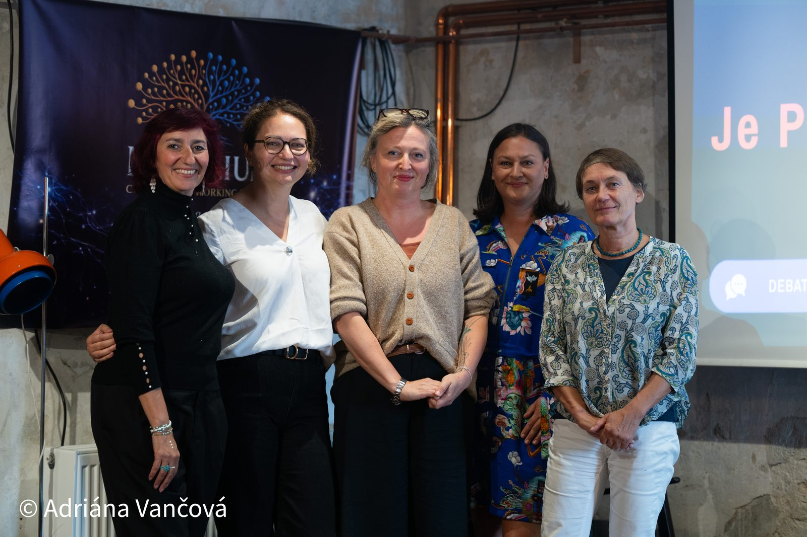
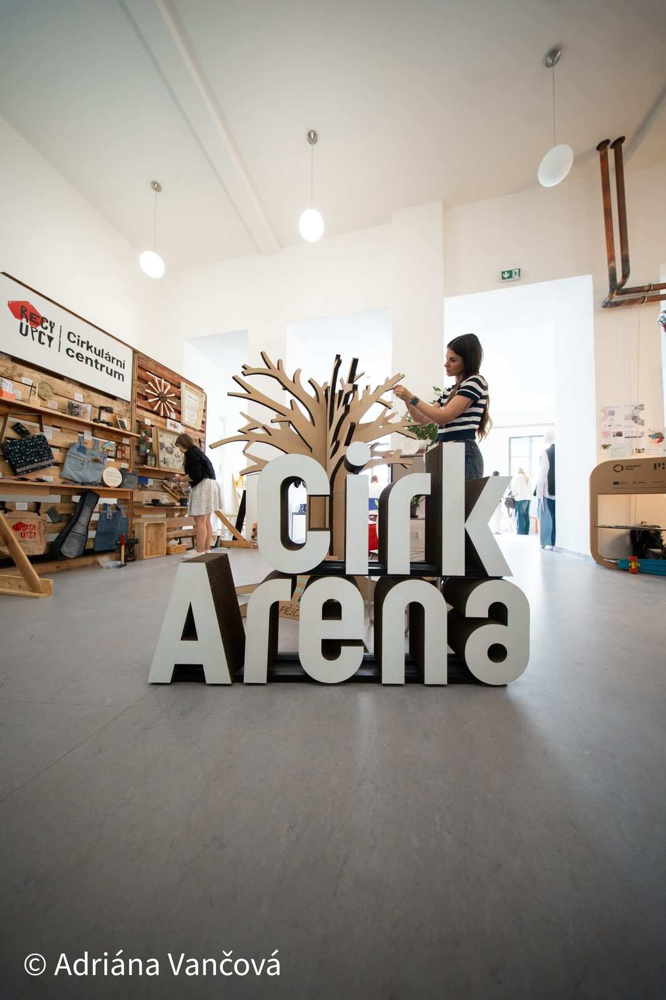
Foto: Adriána Vančová
U nástěnek v Kavárně Hybernská se zastavilo přes 90 lidí a odpovídalo na otázky o tom, jak vnímají cirkularitu a roli Prahy. Tohle jsou nejsilnější zjištění, která z toho vzešla.
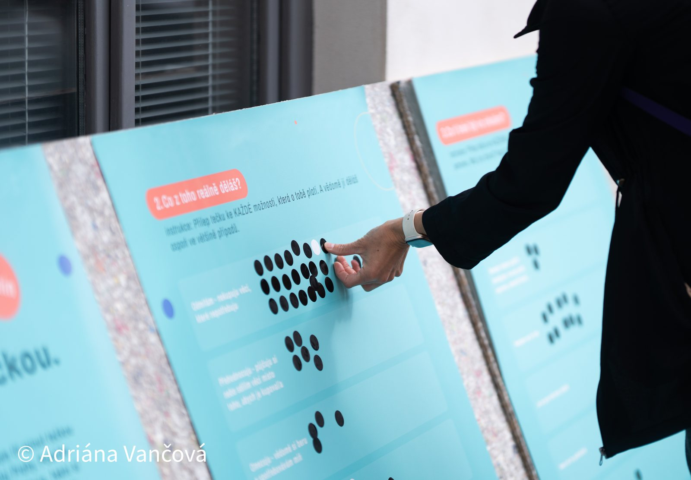
Chystáme podrobný booklet s kompletními výsledky a dalšími informacemi o festivalu. Brzy doplníme.
Přes 25 firem a projektů ukázalo, jak různě může cirkularita vypadat: od domácího kompostéru po recyklovaný beton. Klikni na dlaždici a přečti si víc.
Výběr z toho, co o Festivalu Dokola napsala a odvysílala česká média.
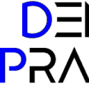
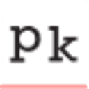
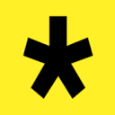
Mnohem líp se zažije, když si osaháte materiály, vyzkoušíte principy na vlastní kůži a poslechnete si lidi, kteří se tématu věnují každý den. Chceme propojit ty, které spojuje jedno: přesvědčení, že věci můžou fungovat dokola, ne jednosměrně. Protože cirkularita není obor ani teorie z konferencí. Je to způsob, jak přemýšlet o světě a o tom, co po sobě necháme.
Cirkulární ekonomika bývá vnímaná jako něco vědeckého a technicistního, téma do odborných konferencí a strategických dokumentů, které se běžného člověka netýká.
Je v každodenních rozhodnutích. V tom, co uděláme se starým svetrem, se zbytky večeře, z čeho se rozhodneme vyrobit nový produkt nebo od koho objednáme nábytek do kanceláře. Festival Dokola je oslava přesně tohohle: oslava změny myšlení, návratu k selskému rozumu a radosti z inovací.
Přes desítku lidí, kteří cirkularitu nejen znají, ale žijí.

Ambasadorka festivalu

Ředitelka INCIEN

Zakladatelka INCIEN

MHMP

On the Boat

Cirkulární dílna

Vedu Clothing
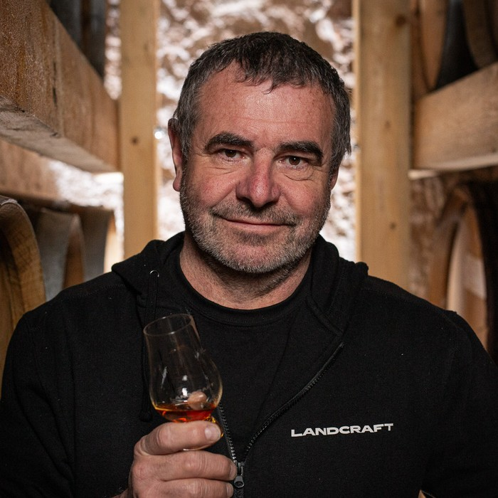
Landcraft
Lídr tématu cirkularity v ČR, který letos slaví 11 let. Od dat a strategických konzultací po vzdělávání a osvětu: INCIEN dostává cirkularitu do médií, měst i firem. Web INCIEN →
Cirkularita je o spolupráci. Pokud máte produkt, téma nebo nápad, který by do dalšího ročníku zapadl, dejte nám vědět.
Ukažte své cirkulární řešení přímo v proudu festivalu, na výstavě postavené ze znovupoužitých materiálů.
Detaily pro firmy →Přiveďte třídu na program šitý na míru žákům a studentům. Přednášky, výstava, dílna i materiály do výuky.
Detaily pro školy →Staňte se součástí děje, ne logem v rohu. Od podpory přes zapojení do programu až po vlastní téma na pódiu.
Detaily pro partnery →Festival vzniká díky lidem a organizacím, kteří to s cirkularitou myslí vážně.
Projekt je realizován s finanční podporou hlavního města Prahy.
Hybernská 998/4, 110 00 Praha, Nové Město
Prostor v centru města, který sám žije principy cirkularity: upcyklovaný nábytek, recyklované materiály, efektivní hospodaření s vodou.
Otevřít v Mapách →Chcete vystavovat, přivést školu, být partnerem nebo máte vlastní nápad na příští ročník? Napište, cirkularita je o spolupráci.